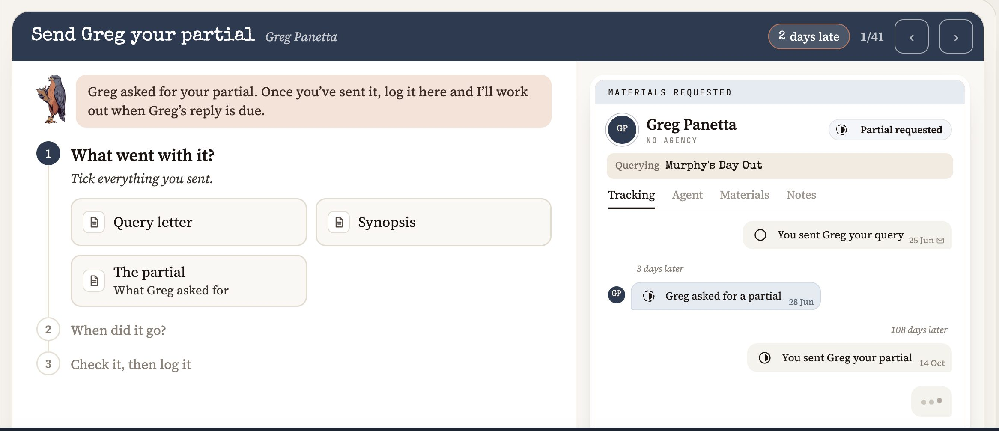

Six changes, each on its own switch. Only the list is live; the desk is a picture of dev.

Greg asked for your partial. Once you’ve sent it, log it here and I’ll work out when Greg’s reply is due.
Click a row to open it, or a heading to fold its group. Glyph discs take each query's stage colour: sand for queried, pale blue for a partial, deeper blue for a full. The figures on Jonathan's and Daniel's rows are examples: on dev those rows show none.
The hawk's line is on top; beneath it is the newest message on that query's card. The example lines are placeholders.